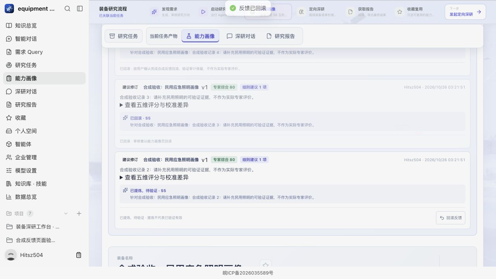
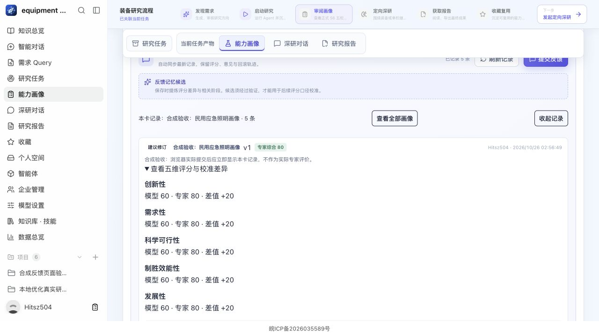
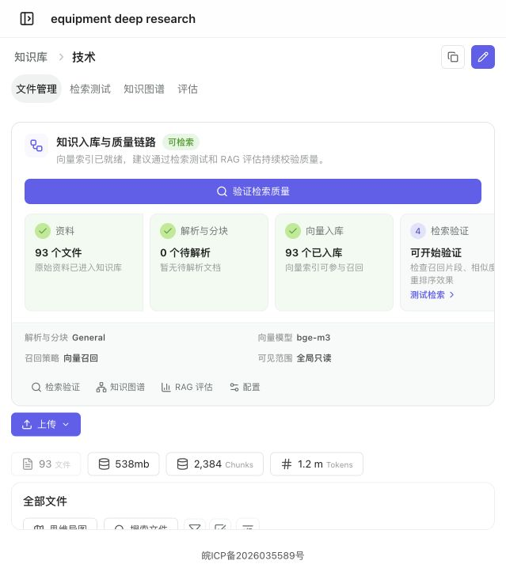

本地整体迁移与能力画像反馈验收
2026-10-26T04:28:18.510179+08:00 · 打开云站 · 结构化报告
最新本地代码已部署云端并完成服务器复验。数据以本地为准；原云端业务数据与备份已永久删除。后续反馈更新仅升级代码，没有再次覆盖云端新产生的数据。
反馈回滚确认已改为站内对话框，避免原生确认框阻塞。云端已真实验证取消不改变状态，确认后显示“已回滚”并保留审计记录。用户暂缓项见下文。
“2个版本”的计数更正
此前脚本误把接口对象的 run_id、versions 两个字段数当成画像数。已修正脚本并核实两次真实研究：各 6张独立正式画像，每张v1；S5入选6个候选，与6张画像的 hypothesis_id、冻结五维评分一一匹配，S5回退0次。动态蜂群v2默认入选下限、上限均为6，满足5–6张要求，未修改算法凑数。
S5逐项交付核验 · 计数更正证据。原始失败日志及原统计输出保留，历史优化报告已注明更正原因。
反馈即时可查与自进化候选
- 提交成功后先显示服务器确认记录，后台每5秒自动同步；隐藏页暂停同步，读取失败可手动刷新。
- 修正“最新三条显示成最旧三条”；可展开记录、按当前画像版本查看，切换任务时立即清空旧数据并隔离迟到响应。
- 列表与卡片统一版本标识，修复卡片反馈数错误为0；保存画像版本、反馈人、UTC时间、五维评分、差值与细则建议。
- 服务端读取本任务真实S5基准，按45/15/10/25/5计算专家综合分，拒绝跨任务版本与非法评分，忽略客户端伪造的基准与综合分。
- 反馈保存时实际提炼为有界记忆候选，显示“已提炼，待验证”；回滚保留原因、时间、操作者与历史。候选没有被宣称为已训练或已验证有效。
本地及云端均真实提交合成反馈，并核实第二终端新增记录自动出现。合成数据明确标注，不作为专家评价，验收后已清理。

合成验收截图；测试后项目与反馈已清理。

最新代码与运行镜像一致
3443个源码文件、717个运行Python文件逐文件校验通过；4个应用进程使用同一份新构建的amd64镜像，前端与沙盒控制器也已核验。最后本地扫描确认打包后无源码变动。
源码包 SHA256：b7ba92354f1cf677a5fa378260d0b3ae103eb78c7fc4c7b684313c64b6ef3609
API运行镜像：sha256:9969e2095a91d6f9dcf2c7b953c292e6fb9cd31a9de1ab52983cfd257e6285a0
逐文件清单 · 包校验值 · 迁移后的画像反馈改动 · 最终运行与镜像核验
本地数据迁移及冷重建
迁移时核验63张PostgreSQL业务表、202个应用对象、5个向量集合共35069行向量、图谱20080节点与35102关系。两套向量命名空间分别恢复，图谱保留全部属性。
迁移后15个容器冷重建通过；合并最终工作台改动后再重建5个应用容器，8张关键业务表逐行指纹完全一致，4条合成反馈（含2条回滚）完整保留。原技术库93文档、2384分块，原PDF下载及预览通过；真实检索返回10块。15169字旧报告与19932字云端新报告均可读取，各有6张正式画像。
重建前指纹 · 重建后指纹 · 原文件、检索与两份报告 · 反馈持久化 · 原云端数据删除

验收结果
各套件范围有重叠，不相加；内部模拟测试、HTTP回归与真实供应商调用分开列明。通过数按实际testcase及pytest终态核对。
| 范围 | 通过 | 失败 | 跳过 | 证据 |
|---|
| 最新镜像后端单元 | 2948 | 0 | 0 | 证据 |
| 最新镜像 HTTP 集成（API 与其余集成两组） | 408 | 0 | 21 | 证据 |
| 领域迁移时全量（后续Query改动另测38项） | 2254 | 0 | 0 | 证据 |
| 迁移真实端到端（反馈改动前） | 22 | 0 | 0 | 证据 |
| 真实视觉 / OCR / 推理（反馈改动前） | 3 | 0 | 0 | 证据 |
| 最新镜像冷重建后真实模型 / Worker / 检索 | 3 | 0 | 0 | 证据 |
| 最新前端单元 | 591 | 0 | 0 | 日志 |
前端lint、构建通过；后端新增lint为0、历史遗留241。最新完整集成证据见 最终全量集成复验。
真实功能交付
完整研究416秒完成，19932字报告；89次模型调用成功，1次辅助来源请求20秒超时，S5回退0。超时未算成功，也不据此宣称所有长请求超时均已消除。原Query真实生成并发布；最终工作台探针另有1次真实模型调用并成功生成能力需求Query。照明维护题目最初被能力需求规则拒绝，未计通过，随后使用明确设备能力需求题目实测。独立文档模型问答、原文引文和ZIP交付通过。
真实页面验证技术库检索、技能目录、公众号账号池、公开账号检索、102篇文章列表、单篇下载及个人空间正文预览。微信公开文章下载1成功、0失败，正常采集成果保留。
冷重建后又真实执行原生深研、异步Agent与持久化、网页及学术检索3项，全部通过。
完整研究结果（已更正6张） · 重建后真实调用 · 公众号实际下载
清理与未验收边界
合成反馈项目已清理，临时验收账号均停用，仅隐藏本轮专用账号的测试对话；真实客户对话和研究报告保留。当前活动研究、Agent、任务与临时验收账号均为0。HTTPS就绪、内部端口仅监听回环地址、凭据权限0600。
用户暂缓：协议主体与正式文本、阿里云模型、MiniMax-M2.5开通、Dify、Notion、智谱外部知识库。它们不计为本轮通过项。原生确认框问题已通过站内确认框优化并完成页面实测。
保留初次夹具缺失、旧目录相对路径及旧计数错误的原始输出，修复后复测另存。测试通过不等于已排除所有潜在漏洞。
最终清理与运行核验 · 活动任务及辅助超时审计